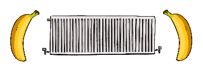
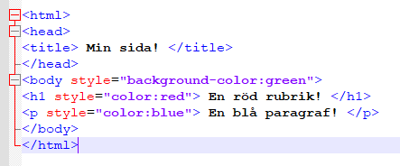

Guide för att göra en egen hemsida!
Välkommen in i HTML-världen!
HTML står för Hyper Text Markup Language och används för att skapa hemsidor på ett sätt som både människor och datorer kan komma överens om. Efter att en forskare vid namn Tim Berners-Lee skapade den första hemsidan 1989 kunde man äntligen länka ihop hemsidor med andra och när internet blev tillgängligt för allmänheten i mitten av nittiotalet exploderade intresset för att skapa egna hemsidor. 1998 bestämde regeringen att folk skulle sluta låna hem och skabba ner arbetsplatsens datorer. Efter att i gymnasiet ha praktiserat på ett företag som städade leasade datorer förstår jag dem. Nu skulle man istället ha en dator hemma. Under de tre kommande åren adopteras nästan en miljon datorer. Självklart missbrukas detta genom kryphål, men det är kanske tack vare detta halva landets befolkning använde nätet vid mellenieskiftet.
Men nu ska vi inte babbla på om gamla hemsidor som ser ut som kräks och bilder som laddar bit för bit via ditt långsamma modem. Först ska jag förklara lite hur HTML fungerar och vad du behöver för att sätta igång.
Hur fungerar en hemsida?
Hemsidorna i sig består av olika filer. En för innehållet på hemsidan, en för hemsidans styling och en för funktionalitet på hemsidan. Till det kan man lägga till bilder, videor, ljud osv. Sedan laddas detta upp på en server som andra datorer kan nå. Men vi ska börja med att bara göra en enkel, lokal hemsida.
Hur börjar jag?
Först av allt behöver du en textredigerare, våra datorer på media ska vara redo med programmet Notepad++ installerat. I detta program ska vi skriva själva hemsidan. Vi kommer även behöva använda oss utav en webbläsare, t.ex. Chrome eller Firefox.

Nu när du har en hemsida kanske det faktiskt vore roligt att fylla den med lite innehåll?
Del 1: Att bygga ett hemside-skelett

Ställ fram en kopp kaffe och inta positionen ”datanörd med gorillanacke”, vi ska börja med HTML! I första lektionen ska vi göra en enkel hemsida men först måste jag förklara lite hur allt fungerar.
HTML består av element med innehåll som datorer kan läsa, dessa omringas av vänster- och högerbanan (eller vinkelparanteser som de lärda säger). De flesta taggar behöver även en sluttagg som föregås av ett snedtreck, men det finns undantag som <!DOCTYPE>.
De mest grundläggande elementen inom html förutom doctype är html, title samt body. Html är själva grunden på hemsidan, title ger sidan ett namn och body är själva "kroppen" där innehåll som vi människor kan se ska vara. Innehållet kan bland annat bestå av text, bilder, videor och länkar men vi börjar med en rubrik följt av en paragraf med text. Öppna nu filen du gjorde i introt och klistra in nedanstående.
<!DOCTYPE html>
<html>
<head>
<title> Min sida! </title>
</head>
<body>
<h1> En rubrik! </h1>
<p> En paragraf! </p>
</body>
</html>
Gissa vad du precis gjorde? En hemsisda! Ovanstående är själva grunden för en hemsida. Spara filen och klicka sedan på den i mappen. Om allt stämmer ska webbläsaren öppna en sida vid namn "Min sida!" med en rubrik samt en paragraf.
- Tänk på att alla sluttaggar måste börja med snedstreck / annars blir datorn förvirrad.
- Prova att lägga till en ny paragraf och ändra titeln på hemsidan till något roligare.
- h1 ger en stor rubrik som har störst prio medans h6 ger en liten med lägst prio.
- Glöm inte att rubriker och paragrafer måste vara inom body på samma sätt som title är inom head.
- Allt förutom DOCTYPE ska vara INOM html.
- Tänk på att du alltid måste spara filen i Notepad++ och sedan ladda om sidan i webbläsaren (t.ex. Chrome) varje gång du ändrar något ifall du vill se något resultat.
| <!DOCTYPE html> |
Berättar för datorn att dokumentet är ett html-dokument. |
| <html> |
Berättar ÅTER för den dumma datorn att detta är ett html-dokument. |
| <head> |
Innehåller allt som webbläsaren vill veta om hemsidan. |
| <title> |
Visar namn på sidan i webbläsare, sökmotorer och bokmärken. |
| <body> |
Själva innehållet på sidan. |
| <h1> |
Sidans första, viktigaste rubrik. |
| <p> |
En paragraf med text. |
Del 2: Färger och du
Nu är själva grunden på sidan klar men tja... Den ser ju rätt så sunkig ut. Lite färg vore väl trevligt? För att ändra utseendet på sidan behöver vi använda oss utav ett element som kallas <style>. Style är ett så kallat informationselement som fungerar lite annorlunda än de andra elementen - dess uppgift är bara att ge information om elementet det placeras inom.
Vi kan säga att vi vill att rubriken ska vara röd och textstycket under ska vara blått.
Som ni ser ovan hamnar <style> inuti head där det ger information om att textens färg ska vara röd. Så enkelt är det! Men du kanske vill ha en fin bakgrundsfärg på sidan? Vi sätter <style> inom <body> på precis samma sätt som head.

Det som påverkar utseendet på din hemsida kallas för CSS, Cascading Style Sheets. Med CSS kan man ändra allt från färger till layout och även göra animationer och jag kan lugnt säga att det CSS på denna hemsidan har tagit mer tid än något annat. Men vi ska börja lite lugnt med färger, bakgrund och typsnitt.
Färger
Det finns tre sätt att förklara för datorskrället vilken färg vi vill ha. Det vi använt oss av ovan har varit de färger som finns inbyggda inom CSS som "red", "blue" och "green". Jag tar några exempel här under men här finns en länk med alla förbestämda färger.
tomato
blueviolet
lavender
palegreen
dodgerblue
hotpink
orange
RGB
Vill man finslipa urvalet lite kan man använda sig utav RGB. RGB är kanske mest känt för "gamerbling", de epilepsiframkallande lamporna som får en datormus att kosta dubbelt. Akronymen står för Red, Blue, Green och likt hexadecimaler får man skriva det i tre högar där varje värde går från 0 till 255. Vill man ha rött skriver man "255, 0, 0" och vill man ha grönt skriver man 0, 255, 0. Gissa hur man får blått? Med RGB kan man även välja hur genomskinlig färgen ska vara genom att använda ett fjärde värde, synligheten.
rgb(0, 191, 255)
rgb(255, 153, 255)
rgb(0, 204, 102)
rgb(255, 255, 0)
rgb(255, 51, 0)
rgba(0, 0, 0, 1.0)
rgba(0, 0, 0, 0.8)
rgba(0, 0, 0, 0.4)
rgba(0, 0, 0, 0.2)
rgba(0, 0, 0, 0.0)
Hexadecimaler
Som ni kanske vet pratar datorer i ettor och nollor, men vid väldigt stora tal är det lättare att använda sig utav det så kallade hexadecimala nummersystemet. Det är baserat på både det vanliga decimala systemet (0-9) samt sex bokstäver (A-F).
En vanlig missuppfattning är att hexadecimaler har något med häxkonster att göra. Det är en sanning med modifikation. Allt med datorer är svart magi, men hexadecimaler är i grunden ett "staket" eller för dagens kids "haschtagg" följt av sex siffror eller bokstäver vilka är värden för färg samt färgstyrka. Dessa värden är i ordern rött, grönt, blått. #FF0000 ger rött, #00FF00 ger grönt och jag orkar inte skriva vad blått är, ni får gissa.
#008080
#FFFAFA
#191970
#FF7F50
#800000
#ADFF2F
#6A5ACD
Lektion 3: Typ typsnitt
Nu när vi lekt runt med färger så kan vi tänka lite på hur texten ska se ut. Standardtypsnittet brukar vara New Times Roman vilket kanske är lite tråkigt, vi provar med något nytt!
style="font-family: 'Courier New', Courier, monospace;"
style="font-family: 'Segoe UI', Tahoma, Geneva, Verdana, sans-serif;"
style="font-family: 'Franklin Gothic Medium', 'Arial Narrow', Arial, sans-serif;"
style="font-family: 'Trebuchet MS', 'Lucida Sans Unicode', 'Lucida Grande', 'Lucida Sans', Arial, sans-serif;"
style="font-family: Impact, Haettenschweiler, 'Arial Narrow Bold', sans-serif;"
style="font-family: cursive;"
Tänk på att texten kan se annorlunda ut på olika datorer och skärmar. Vi är även alla olika som människor så en liten text behöver större ögon och vice versa. För att ackommendera behöver vi kanske ändra på storleken. En 20 pixlar stor text passar kanske de med mindre ögon medans en text på 5 pixlar passar hybrider mellan myra och människa. Glöm inte att använda semikolon efter varje sak du ändrar.
Förutom typsnitt och storlek på texten kan man snygga till den lite med olika. Vill man t.ex. ha kursiv text kan man använda "font-style: italic;" och vill man ha understruken text kan man använda "text-decoration: underline;".
Förr i tiden var det hippt att ha sin text centrerad på hemsidan och ibland kan det vara roligt att ha texten lite hit och dit. Nu kan ni sjunga med:
Prästens lilla kråka skulle ut och åka,
Ingen hade hon som körde.
Än slank hon
dit
Och än slank hon
dit
Och än slank hon
ner i diket!
Ska jag skriva ut alla sätt som man kan variera texten på här så kommer det bli en vääääldigt lång lektion så lek gärna runt med hjälp av tabellen under. Framöver planerar jag att göra en mer ingående lektion med roliga effekter på texten men än så länge får ni nöja er med ovanstående.
| "font-size: 25px;" |
En 25 pixlar stor text |
| "font-size: 5px;" |
En 5 pixlar liten text |
| "font-style: italic;" |
En kursiv text |
| "text-align: left;" |
En text till vänster |
| "text-align: center;" |
En centrerad text |
| "text-align: right;" |
En text till höger |
| "transform: scale(-1, 1);" |
Här var det baklänges |
| "transform: rotate(180deg); |
Här var det upp och ned |
| "text-decoration: underline;" |
Understruken text |
| "text-decoration: line-through;" |
Genomstruken text |
Lektion 4: Bilder och annat för våra sinnen
Är man en del av det stora spindelnätet är det viktigt att man har trådar till andra sidor så att folk kan komma vidare. Elementet a som i "anchor" (ankare, inte ankor) berättar att det som komma skall är en hyperlänk till någon annanstans, och precis som style behöver den ett attribut som berättar vart man vill komma genom att klicka på den. href anger vilken URL som ska användas. Mellan taggarna skriver man in det som ska synas på själva hemsidan.
Tar dig t.ex. till vår egen eminenta hemsida.
Det finns absoluta och relativa länkar. En absolut länk skickar användaren till en utomstående hemsida medan relativa länkar används för sidor på samma dator. Prova att göra en ny hemsida och länka till den med <a>.
Något som är viktigt på en hemsida är att lägga in massvis med bilder i olika storlekar och format. Blinkande, animerade GIF:ar samt äcklig MIDI-musik som inte går att stänga av är klassiker. Men vi nöjer oss med en bild tills vidare. För att just detta experiment ska fungera behöver du lägga en bild i samma mapp som din hemsida. Det kan vara vilken bild som helst!

Som du ser ovan fungerar <img> på samma sätt som <a>. Vill man ändra storleken på bilden kan man göra det via <style>.